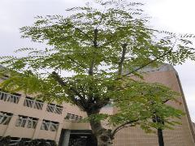

鐵刀木
學名：Senna siamea (Lam.) Irwin & Barneby
科名：蘇木科
別名：暹羅槐、暹羅決明
原產地：印度、泰國、斯里藍卡、馬來西亞
特徵：
半落葉喬木，冬季會落葉，樹高可達20公尺，主幹直立，葉互生，偶數羽狀複葉，小葉對生有6至12對，小葉為長橢圓形，葉端鈍而微凹，葉基鈍，葉面平滑，紙質，正面深綠，背面綠色，夏季開花，花序為總狀圓錐花序，花黃色，莢果扁平細長，種子處浮凸明顯，內含種子。
用途：
適做庭園綠蔭樹或行道樹，木材黑褐色，是家具、建築、雕刻的優良材料，樹皮及葉可入藥，葉入藥為緩瀉劑，根可為驅蟲劑；葉子可作為數種粉蝶科蝴蝶的食物。